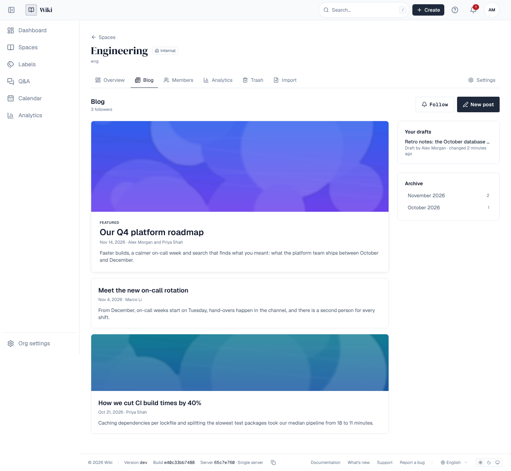
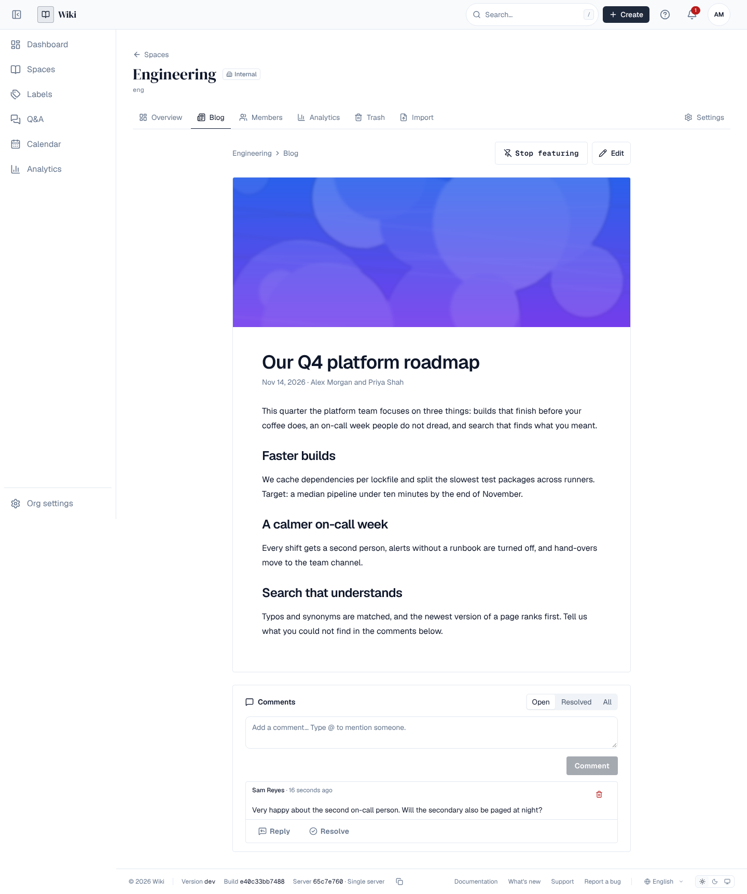
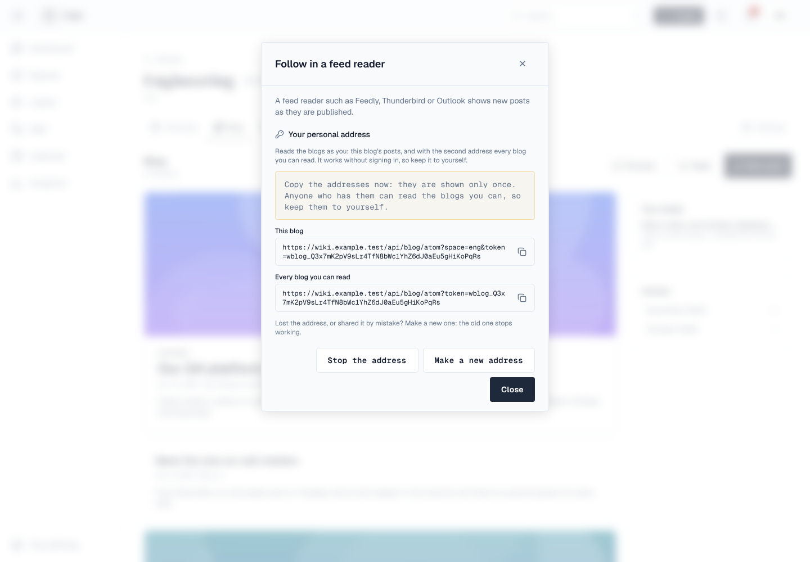
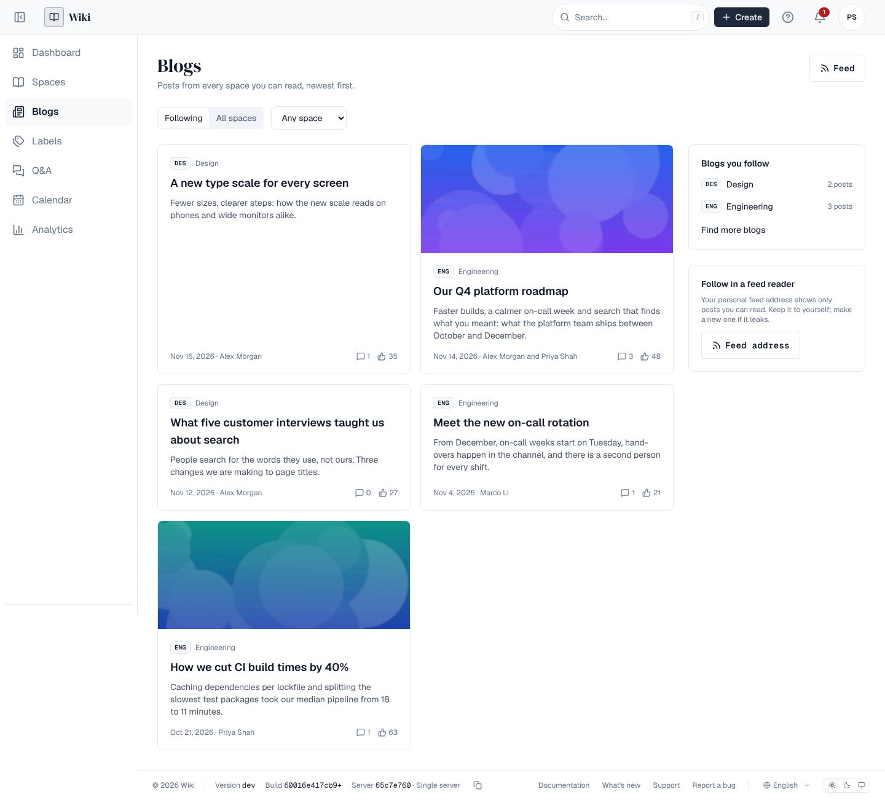
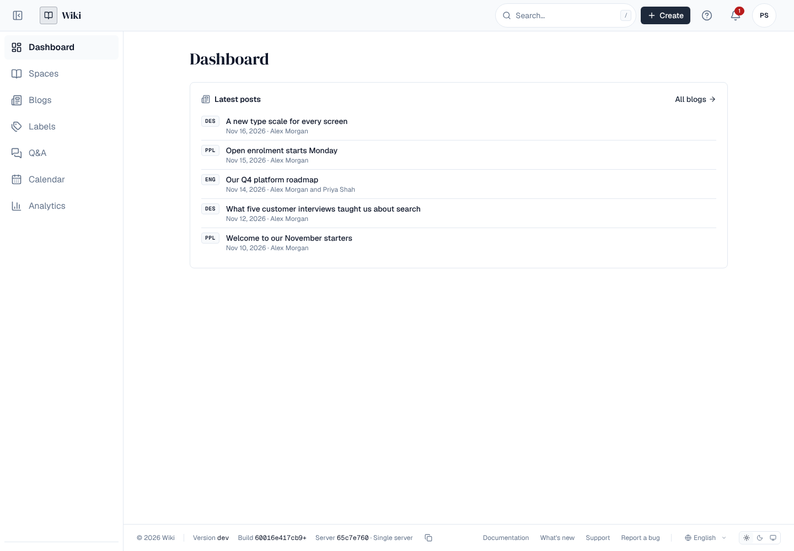
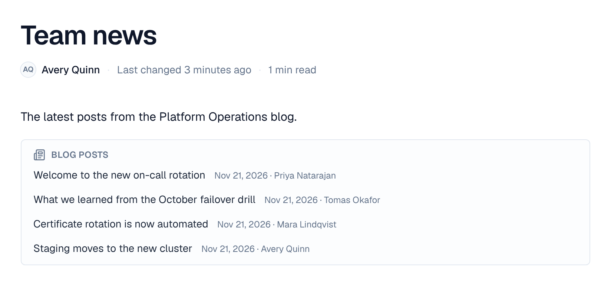
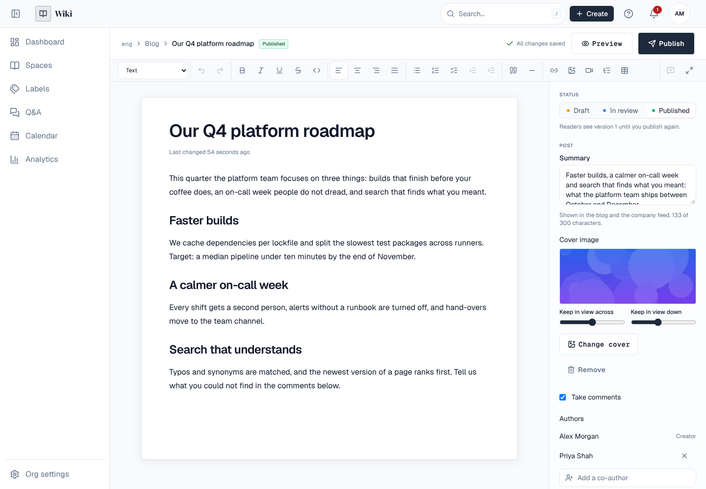
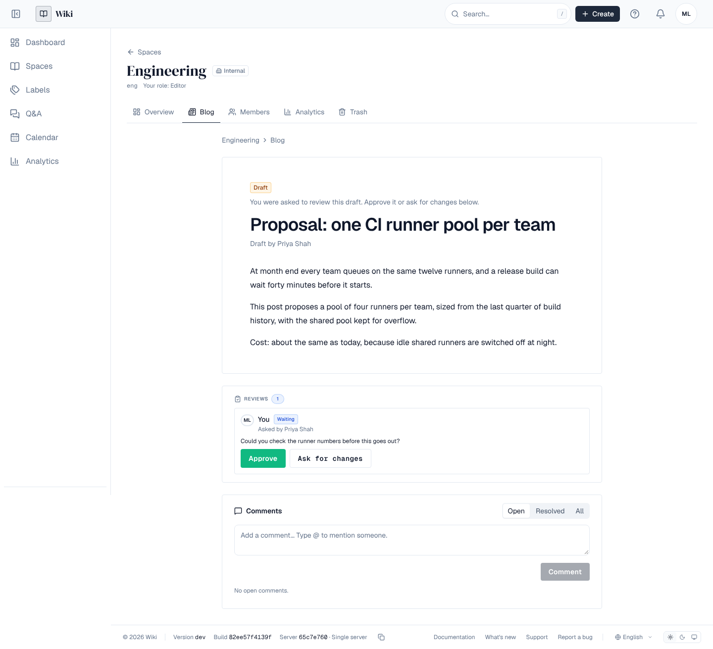
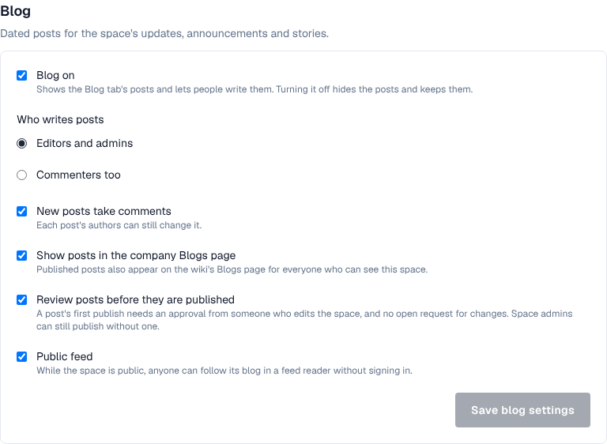

1. Overview
Every space can have a blog: dated posts for its updates, announcements and stories, newest first. A post is written, published, commented on and versioned like a page, but it isn't part of the page tree: it lives on the space's Blog tab, has an address of its own, a date, its authors, a summary and an optional cover image.
New spaces start with the blog on. In spaces that existed before blogs came to the Wiki, it is off until a space admin turns it on.
2. Reading a blog
Open a space and choose the Blog tab. A post the space's admins featured comes first, then the published posts, newest first; More posts loads older ones. Archive on the side lists the months with posts: choose one to see that month's only, or All posts to go back.

Open a post to read it: its cover, title, date and authors, the published text, its labels and its comments. When the authors closed comments, the post says so, and the comments it already has stay.

If the blog is off, the tab says the space has no blog. Posts written while it was on aren't shown in the list, but links to them still work.
3. Following a blog
Follow on the Blog tab adds you to the blog's followers; the tab shows how many there are. Unfollow takes you off again. You need to be signed in.
When a post is published for the first time, its blog's followers get an alert with a link to it (in the bell menu, and by email or digest as their alert preferences say). Its authors aren't told, nor anyone who can no longer read the space. Authors can turn this off for a small post, such as a correction; later publishes of a post tell nobody.
4. Following in a feed reader
Feed on the Blog tab gives addresses a feed reader (Feedly, Thunderbird, Outlook and others that read Atom feeds) uses to show new posts: each post's title, summary, date, authors and a link.
- Public address of this blog: shown when the space is public and its admins allow a public feed. Anyone can read it without signing in.
- Your personal address: choose Make an address to get two addresses, one for this blog and one for every blog you can read. They read the blogs as you, without signing in, so keep them to yourself. They are shown only once: copy them right away.
Lost the address, or shared it by mistake? Choose Make a new address: the old one stops working. Stop the address turns it off. Signing out of your other sessions also stops it.

5. The company Blogs page
Blogs in the left menu gathers the posts of every blog you can read, newest first, twelve at a time with Load more. Each post shows its space (a link to that blog), title, summary, authors, date, and how many comments and likes it has.
- Following shows posts from the blogs you follow; All spaces shows every blog. The page starts on Following when you follow at least one blog.
- Space narrows the list to one blog.
- Blogs you follow lists the blogs you follow, each a link to its Blog tab.
- Feed gives your personal feed address for every blog you can read (see Following in a feed reader).

A space's posts appear here only while its admins keep Show posts in the company Blogs page on. While anonymous access is on, visitors who aren't signed in see the posts of public spaces, without the tabs or a feed address.
6. Latest posts on your dashboard
Your Dashboard shows Latest posts: the five newest posts from the blogs you follow and from the spaces you are a member of, with All blogs to open the Blogs page.

Posts are also found by search, by the words of their title. Download on a post saves it as Word or PDF, with its date, authors and cover image (Import and export).
A plugin your administrator installed may add a panel beside a blog's posts.
7. Blog posts on a page
To show a blog's newest posts on a page, such as the space's overview, type /blog in the editor. The Blog posts block lists the latest posts of this space's blog, or of other blogs, with their date, authors and summary; its settings choose the blogs, labels, how many (3, 5 or 10) and whether to show the summaries. Each reader sees only posts they may read. See Lists of pages and page information.

8. Writing a post
New post appears on the Blog tab for people who may write posts in the space: editors and admins, and commenters too when the space allows it (see Managing a space's blog).
- Choose New post and give it a title. The post starts as a draft that only you, its co-authors and the space's admins see.
- Write it in the editor, as you would a page. Several authors can write at the same time. See The editor.
- In the editor's side panel, under Post, add a Summary (shown in lists and feeds, at most 300 characters), a Cover image and where it stays in view when cropped, whether it Takes comments, whether to Tell followers when it's published, and its Authors.
- If the space reviews posts, ask for a review (see Review before publishing).
- Choose Publish. The post appears on the Blog tab, dated the day it was first published; later publishes update it and keep that date.

Your unpublished posts are listed under Your drafts on the Blog tab, to pick up where you left off.
9. Review before publishing
A space's admins can ask for every post to be reviewed before it is first published. Then Publish works only once someone who edits the space approved the post and no reviewer's request for changes is still open; the Post panel in the editor says where the post stands. Space admins can publish without a review, and later publishes of a published post need none.
- In the editor, under Reviews in the side panel, choose Ask for review and pick one or more editors of the space, with a note and a date if you like.
- Each reviewer gets an alert. Opening the post shows them the draft as it is now, with the review requests under it, where they choose Approve or Ask for changes.
- After changes, ask the reviewer again: their newest answer is the one that counts.
- Once approved, publish the post.

A reviewer reads the draft and its images and answers the request; they can't edit the post.
10. Co-authors
A post's creator can add up to 10 co-authors, found by name among the space's people. Each must be someone who may write posts in the space. Co-authors edit, publish and change the post's settings as its creator does; the post lists them after its creator.
11. Who can change a post
Only a post's authors and the space's admins edit a post, change its settings or delete it. Other editors of the space read it like everyone else and don't see its drafts. An author who can no longer write posts in the space (their role changed, or the blog was turned off) can no longer edit it; the space's admins still can.
| You are | Read posts | Write posts | Edit a post | Feature a post, blog settings |
|---|---|---|---|---|
| Viewer | Yes | No | No | No |
| Commenter | Yes | If the space allows | Your own | No |
| Editor | Yes | Yes | Your own | No |
| Admin | Yes | Yes | Any | Yes |
12. Managing a space's blog
Space admins find the blog's settings in the space's Settings tab, under Blog:
- Blog on: shows the Blog tab's posts and lets people write them. Turning it off hides the posts and keeps them.
- Who writes posts: editors and admins, or commenters too.
- New posts take comments: the starting choice for new posts; each post's authors can still change it.
- Show posts in the company Blogs page: whether the space's published posts also appear on the Wiki's Blogs page, for everyone who can see the space.
- Review posts before they are published: a post's first publish needs an approval (see Review before publishing).
- Public feed: while the space is public, anyone can follow its blog in a feed reader without signing in. Off, only signed-in people and personal feed addresses read it.

Posts from a Confluence space export come in as posts of the blog when you import the export on the space's Import tab (Import and export).
To feature a post, open it and choose Feature: it moves to the top of the Blog tab until another post is featured or you choose Stop featuring. Only published posts can be featured.
Changes to a blog's settings, to a post's own settings and to the featured post raise events that policies, automation and plugins can use (blog.settings.update, blog.post.update, blog.post.feature, blog.follow), and are in the audit log. A post's first publish raises blog.post.publish, which a policy can refuse; making a personal feed address raises blog.feed.create and stopping it blog.feed.delete. Creating, publishing and deleting a post also raise the page events with kind set to blog. See Events.